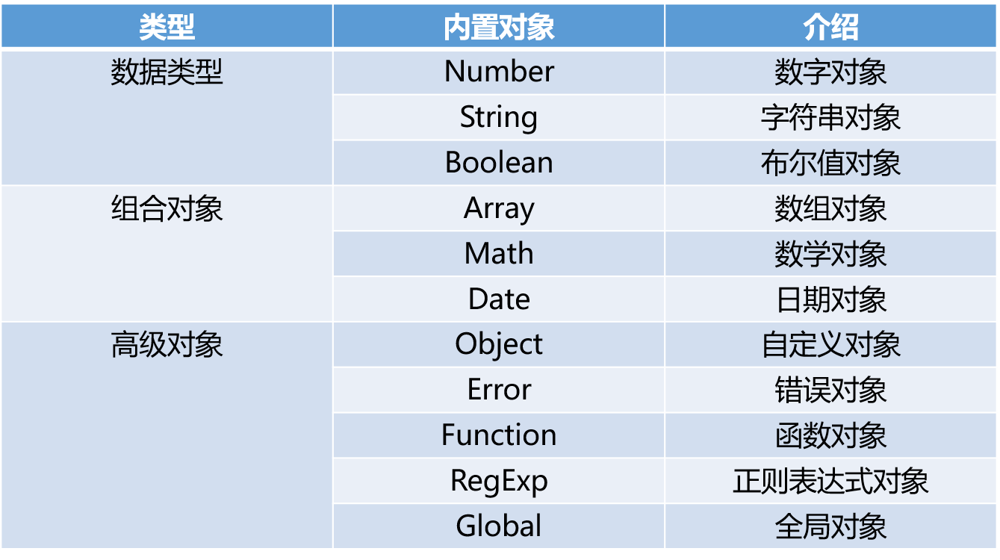

ECMAScript和JavaScript的关系
1996年11月，JavaScript的创造者--Netscape公司，决定将JavaScript提交给国际标准化组织ECMA，希望这门语言能够成为国际标准。次年，ECMA发布262号标准文件（ECMA-262）的第一版，规定了浏览器脚本语言的标准，并将这种语言称为ECMAScript，这个版本就是1.0版。
该标准一开始就是针对JavaScript语言制定的，但是没有称其为JavaScript，有两个方面的原因。一是商标，JavaScript本身已被Netscape注册为商标。二是想体现这门语言的制定者是ECMA，而不是Netscape，这样有利于保证这门语言的开发性和中立性。
因此ECMAScript和JavaScript的关系是，前者是后者的规格，后者是前者的一种实现。
ECMAScript的历史
| 年份 | 名称 | 描述 |
|---|---|---|
| 1997 | ECMAScript 1 | 第一个版本 |
| 1998 | ECMAScript 2 | 版本变更 |
| 1999 | ECMAScript 3 | 添加正则表达式添加try/catch |
| ECMAScript 4 | 没有发布 | |
| 2009 | ECMAScript 5 | 添加"strict mode"严格模式添加JSON支持 |
| 2011 | ECMAScript 5.1 | 版本变更 |
| 2015 | ECMAScript 6 | 添加类和模块 |
| 2016 | ECMAScript 7 | 增加指数运算符（**）增加Array.prototype.includes |
注：ES6就是指ECMAScript 6。
尽管 ECMAScript 是一个重要的标准，但它并不是 JavaScript 唯一的部分，当然，也不是唯一被标准化的部分。实际上，一个完整的 JavaScript 实现是由以下 3 个不同部分组成的：
简单地说，ECMAScript 描述了JavaScript语言本身的相关内容。
JavaScript 是脚本语言
JavaScript 是一种轻量级的编程语言。
JavaScript 是可插入 HTML 页面的编程代码。
JavaScript 插入 HTML 页面后，可由所有的现代浏览器执行。
JavaScript 很容易学习。
Script标签内写代码
<script>
// 在这里写你的JS代码
</script>引入额外的JS文件
<script src="myscript.js"></script>注释（注释是代码之母）
// 这是单行注释
/*
这是
多行注释
*/结束符
JavaScript中的语句要以分号（;）为结束符。
变量声明
注意：
变量名是区分大小写的。
推荐使用驼峰式命名规则。
保留字不能用做变量名。
补充：
ES6新增了let命令，用于声明变量。其用法类似于var，但是所声明的变量只在let命令所在的代码块内有效。例如：for循环的计数器就很适合使用let命令。
for (let i=0;i<arr.length;i++){...}ES6新增const用来声明常量。一旦声明，其值就不能改变。
const PI = 3.1415;
PI // 3.1415
PI = 3
// TypeError: "PI" is read-onlyJavaScript拥有动态类型
var x; // 此时x是undefined
var x = 1; // 此时x是数字
var x = "dogfa" // 此时x是字符串 数值(Number)
JavaScript不区分整型和浮点型，就只有一种数字类型。
var a = 12.34;
var b = 20;
var c = 123e5; // 12300000
var d = 123e-5; // 0.00123还有一种NaN，表示不是一个数字（Not a Number）。
常用方法：
parseInt("123") // 返回123
parseInt("ABC") // 返回NaN,NaN属性是代表非数字值的特殊值。该属性用于指示某个值不是数字。
parseFloat("123.456") // 返回123.456字符串(String)
var a = "Hello"
var b = "world;
var c = a + b;
console.log(c); // 得到Helloworld常用方法：
| 方法 | 说明 |
|---|---|
| .length | 返回长度 |
| .trim() | 移除空白 |
| .trimLeft() | 移除左边的空白 |
| .trimRight() | 移除右边的空白 |
| .charAt(n) | 返回第n个字符 |
| .concat(value, ...) | 拼接 |
| .indexOf(substring, start) | 子序列位置 |
| .substring(from, to) | 根据索引获取子序列 |
| .slice(start, end) | 切片 |
| .toLowerCase() | 小写 |
| .toUpperCase() | 大写 |
| .split(delimiter, limit) | 分割 |
slice和substring的区别：
string.slice(start, stop)和string.substring(start, stop)：
两者的相同点：
如果start等于end，返回空字符串
如果stop参数省略，则取到字符串末
如果某个参数超过string的长度，这个参数会被替换为string的长度
substirng()的特点：
如果 start > stop ，start和stop将被交换
如果参数是负数或者不是数字，将会被0替换
silce()的特点：
如果 start > stop 不会交换两者
如果start小于0，则切割从字符串末尾往前数的第abs(start)个的字符开始(包括该位置的字符)
如果stop小于0，则切割在从字符串末尾往前数的第abs(stop)个字符结束(不包含该位置字符)
补充：
ES6中引入了模板字符串。模板字符串（template string）是增强版的字符串，用反引号（`）标识。它可以当做普通字符串使用，也可以用来定义多行字符串，或者在字符串中嵌入变量。
// 普通字符串
`这是普通字符串！`
// 多行文本
`这是多行的
文本`
// 字符串中嵌入变量
var name = "djb", time = "today";
`Hello ${name}, how are you ${time}?`注意：
如果模板字符串中需要使用反引号，则在其前面要用反斜杠转义。
JSHint启用ES6语法支持:/* jshint esversion: 6 */
布尔值(Boolean)
区别于Python，true和false都是小写。
var a = true;
var b = false;""(空字符串)、0、null、undefined、NaN都是false。
null和undefined
null表示变量的值是空，undefined则表示只声明了变量，但还没有赋值。
对象(Object)
JavaScript 中的所有事物都是对象：字符串、数值、数组、函数...此外，JavaScript 允许自定义对象。
JavaScript 提供多个内建对象，比如 String、Date、Array 等等。
对象只是带有属性和方法的特殊数据类型
数组
数组对象的作用是：使用单独的变量名来存储一系列的值。类似于Python中的列表。
var a = [123, "ABC"];
console.log(a[1]); // 输出"ABC"常用方法：
| 方法 | 说明 |
|---|---|
| .length | 数组的大小 |
| .push(ele) | 尾部追加元素 |
| .pop() | 获取尾部的元素 |
| .unshift(ele) | 头部插入元素 |
| .shift() | 头部移除元素 |
| .slice(start, end) | 切片 |
| .reverse() | 反转 |
| .join(seq) | 将数组元素连接成字符串 |
| .concat(val, ...) | 连接数组 |
| .sort() | 排序 |
| .forEach() | 将数组的每个元素传递给回调函数 |
| .splice() | 删除元素，并向数组添加新元素。 |
| .map() | 返回一个数组元素调用函数处理后的值的新数组 |
关于sort()需要注意：
如果调用该方法时没有使用参数，将按字母顺序对数组中的元素进行排序，说得更精确点，是按照字符编码的顺序进行排序。要实现这一点，首先应把数组的元素都转换成字符串（如有必要），以便进行比较。
如果想按照其他标准进行排序，就需要提供比较函数，该函数要比较两个值，然后返回一个用于说明这两个值的相对顺序的数字。比较函数应该具有两个参数 a 和 b，其返回值如下：
若 a 小于 b，在排序后的数组中 a 应该出现在 b 之前，则返回一个小于 0 的值。
若 a 等于 b，则返回 0。
若 a 大于 b，则返回一个大于 0 的值。
示例：
function sortNumber(a,b){
return a - b
}
var arr1 = [11, 100, 22, 55, 33, 44]
arr1.sort(sortNumber)关于遍历数组中的元素，可以使用下面的方式：
var a = [10, 20, 30, 40];
for (var i=0;i<a.length;i++) {
console.log(a[i]);
}splice()
语法：
splice(index,howmany,item1,.....,itemX)
参数：
| 参数 | 描述 |
|---|---|
| index | 必需。规定从何处添加/删除元素。 该参数是开始插入和（或）删除的数组元素的下标，必须是数字。 |
| howmany | 必需。规定应该删除多少元素。必须是数字，但可以是 "0"。 如果未规定此参数，则删除从 index 开始到原数组结尾的所有元素。 |
| item1, ..., itemX | 可选。要添加到数组的新元素 |
map()
语法：
map(function(currentValue,index,arr), thisValue)
参数：
| 参数 | 描述 |
|---|---|
| function(currentValue, index,arr) | 必须。函数，数组中的每个元素都会执行这个函数 |
| thisValue | 可选。对象作为该执行回调时使用，传递给函数，用作 "this" 的值。 如果省略了 thisValue ，"this" 的值为 "undefined" |
function(currentValue, index,arr)
| 参数 | 描述 |
|---|---|
| currentValue | 必须。当前元素的值 |
| index | 可选。当期元素的索引值 |
| arr | 可选。当期元素属于的数组对象 |
forEach()
语法：
forEach(function(currentValue, index, arr), thisValue)
参数：
| 参数 | 描述 |
|---|---|
| function(currentValue, index, arr) | 必需。 数组中每个元素需要调用的函数。 |
| thisValue | 可选。传递给函数的值一般用 "this" 值。 如果这个参数为空， "undefined" 会传递给 "this" 值 |
function(currentValue, index, arr)
| 参数 | 描述 |
|---|---|
| currentValue | 必需。当前元素 |
| index | 可选。当前元素的索引值。 |
| arr | 可选。当前元素所属的数组对象。 |
类型查询
typeof "abc" // "string"
typeof null // "object"
typeof true // "boolean"
typeof 123 // "number"typeof是一个一元运算符（就像++，--，！，- 等一元运算符），不是一个函数，也不是一个语句。
对变量或值调用 typeof 运算符将返回下列值之一：
算术运算符
+ - * / % ++ --比较运算符
> >= < <= != == === !==注意：
1 == “1” // true
1 === "1" // false逻辑运算符
&& || !赋值运算符
= += -= *= /=if-else
var a = 10;
if (a > 5){
console.log("yes");
}else {
console.log("no");
}if-else if-else
var a = 10;
if (a > 5){
console.log("a > 5");
}else if (a < 5) {
console.log("a < 5");
}else {
console.log("a = 5");
}switch
var day = new Date().getDay();
switch (day) {
case 0:
console.log("Sunday");
break;
case 1:
console.log("Monday");
break;
default:
console.log("...")
}switch中的case子句通常都会加break语句，否则程序会继续执行后续case中的语句。
for
for (var i=0;i<10;i++) {
console.log(i);
}while
var i = 0;
while (i < 10) {
console.log(i);
i++;
}三元运算
var a = 1;
var b = 2;
var c = a > b ? a : b函数定义
// 普通函数定义
function f1() {
console.log("Hello world!");
}
// 带参数的函数
function f2(a, b) {
console.log(arguments); // 内置的arguments对象
console.log(arguments.length);
console.log(a, b);
}
// 带返回值的函数
function sum(a, b){
return a + b;
}
sum(1, 2); // 调用函数
// 匿名函数方式
var sum = function(a, b){
return a + b;
}
sum(1, 2);
// 立即执行函数
(function(a, b){
return a + b;
})(1, 2);补充：
ES6中允许使用“箭头”（=>）定义函数。
var f = v => v;
// 等同于
var f = function(v){
return v;
}如果箭头函数不需要参数或需要多个参数，就是用圆括号代表参数部分：
var f = () => 5;
// 等同于
var f = function(){return 5};
var sum = (num1, num2) => num1 + num2;
// 等同于
var sum = function(num1, num2){
return num1 + num2;
}函数中的arguments参数
function add(a,b){
console.log(a+b);
console.log(arguments.length)
}
add(1,2)
// 输出3 2注意：
函数只能返回一个值，如果要返回多个值，只能将其放在数组或对象中返回。
函数的全局变量和局部变量
局部变量
在JavaScript函数内部声明的变量（使用 var）是局部变量，所以只能在函数内部访问它（该变量的作用域是函数内部）。只要函数运行完毕，本地变量就会被删除。
全局变量
在函数外声明的变量是全局变量，网页上的所有脚本和函数都能访问它。
变量生存周期
JavaScript变量的生命期从它们被声明的时间开始。
局部变量会在函数运行以后被删除。
全局变量会在页面关闭后被删除。
作用域
首先在函数内部查找变量，找不到则到外层函数查找，逐步找到最外层。
几个例子：
一、
var city = "BeiJing";
function f() {
var city = "ShangHai";
function inner(){
var city = "ShenZhen";
console.log(city);
}
inner();
}
f();
// 输出 ShenZhen二、
var city = "BeiJing";
function Bar() {
console.log(city);
}
function f() {
var city = "ShangHai";
return Bar;
}
var ret = f();
ret();
// 输出 BeiJing三、闭包
var city = "BeiJing";
function f(){
var city = "ShangHai";
function inner(){
console.log(city);
}
return inner;
}
var ret = f();
ret();
// 输出 ShangHaiJavaScript中在调用函数的那一瞬间，会先进行词法分析。
词法分析的过程：
当函数调用的前一瞬间，会先形成一个激活对象：Avtive Object（AO），并会分析以下3个方面：
1:函数参数，如果有，则将此参数赋值给AO，且值为undefined。如果没有，则不做任何操作。
2:函数局部变量，如果AO上有同名的值，则不做任何操作。如果没有，则将此变量赋值给AO，并且值为undefined。
3:函数声明，如果AO上有，则会将AO上的对象覆盖。如果没有，则不做任何操作。
函数内部无论是使用参数还是使用局部变量都到AO上找。
看两个例子：
var age = 18;
function foo(){
console.log(age);
var age = 22;
console.log(age);
}
foo(); // 问：执行foo()之后的结果是？第二题：
var age = 18;
function foo(){
console.log(age);
var age = 22;
console.log(age);
function age(){
console.log("呵呵");
}
console.log(age);
}
foo(); // 执行后的结果是？词法分析过程：
1、分析参数，有一个参数，形成一个 AO.age=undefine;
2、分析变量声明，有一个 var age, 发现 AO 上面已经有一个 AO.age，因此不做任何处理
3、分析函数声明，有一个 function age(){...} 声明， 则把原有的 age 覆盖成 AO.age=function(){...};
最终，AO上的属性只有一个age，并且值为一个函数声明
执行过程：
注意：执行过程中所有的值都是从AO对象上去寻找
1、执行第一个 console.log(age) 时，此时的 AO.age 是一个函数，所以第一个输出的一个函数
2、这句 var age=22; 是对 AO.age 的属性赋值， 此时AO.age=22 ，所以在第二个输出的是 2
3、同理第三个输出的还是22, 因为中间再没有改变age值的语句了
JavaScript中的所有事物都是对象：字符串、数字、数组、日期，等等。在JavaScript中，对象是拥有属性和方法的数据。
注意var s1 = "abc"和var s2 = new String("abc")的区别：typeof s1 --> string而 typeof s2 --> Object

自定义对象
JavaScript的对象（Object）本质上是键值对的集合（Hash结构），但是只能用字符串作为键。
var a = {"name": "djb", "age": 18};
console.log(a.name);
console.log(a["age"]);遍历对象中的内容：
var a = {"name": "djb", "age": 18};
for (var i in a){
console.log(i, a[i]);
}Date对象
创建Date对象
//方法1：不指定参数
var d1 = new Date();
console.log(d1.toLocaleString());
//方法2：参数为日期字符串
var d2 = new Date("2004/3/20 11:12");
console.log(d2.toLocaleString());
var d3 = new Date("04/03/20 11:12");
console.log(d3.toLocaleString());
//方法3：参数为毫秒数
var d3 = new Date(5000);
console.log(d3.toLocaleString());
console.log(d3.toUTCString());
//方法4：参数为年月日小时分钟秒毫秒
var d4 = new Date(2004,2,20,11,12,0,300);
console.log(d4.toLocaleString()); //毫秒并不直接显示Date对象的方法
var d = new Date();
//getDate() 获取日
//getDay () 获取星期
//getMonth () 获取月（0-11）
//getFullYear () 获取完整年份
//getHours () 获取小时
//getMinutes () 获取分钟
//getSeconds () 获取秒
//getMilliseconds () 获取毫秒
//getTime () 返回累计毫秒数(从1970/1/1午夜)Json对象
var str1 = '{"name": "djb", "age": 18}';
var obj1 = {"name": "djb", "age": 18};
// JSON字符串转换成对象
var obj = JSON.parse(str1);
// 对象转换成JSON字符串
var str = JSON.stringify(obj1);RegExp对象
//RegExp对象
//创建正则对象方式1
// 参数1 正则表达式(不能有空格)
// 参数2 匹配模式：常用g(全局匹配;找到所有匹配，而不是在第一个匹配后停止)和i(忽略大小写)
// 用户名只能是英文字母、数字和_，并且首字母必须是英文字母。长度最短不能少于6位 最长不能超过12位。
// 创建RegExp对象方式（逗号后面不要加空格）
var reg1 = new RegExp("^[a-zA-Z][a-zA-Z0-9_]{5,11}$");
// 匹配响应的字符串
var s1 = "bc123";
//RegExp对象的test方法，测试一个字符串是否符合对应的正则规则，返回值是true或false。
reg1.test(s1); // true
// 创建方式2
// /填写正则表达式/匹配模式（逗号后面不要加空格）
var reg2 = /^[a-zA-Z][a-zA-Z0-9_]{5,11}$/;
reg2.test(s1); // true
// String对象与正则结合的4个方法
var s2 = "hello world";
s2.match(/o/g); // ["o", "o"] 查找字符串中 符合正则 的内容
s2.search(/h/g); // 0 查找字符串中符合正则表达式的内容位置
s2.split(/o/g); // ["hell", " w", "rld"] 按照正则表达式对字符串进行切割
s2.replace(/o/g, "s"); // "hells wsrld" 对字符串按照正则进行替换
// 关于匹配模式：g和i的简单示例
var s1 = "name:Alice age:18";
s1.replace(/a/, "哈哈哈"); // "n哈哈哈me:Alice age:18"
s1.replace(/a/g, "哈哈哈"); // "n哈哈哈me:Alice 哈哈哈ge:18" 全局匹配
s1.replace(/a/gi, "哈哈哈"); // "n哈哈哈me:哈哈哈lice 哈哈哈ge:18" 不区分大小写
// 注意事项1：
// 如果regExpObject带有全局标志g，test()函数不是从字符串的开头开始查找，而是从属性regExpObject.lastIndex所指定的索引处开始查找。
// 该属性值默认为0，所以第一次仍然是从字符串的开头查找。
// 当找到一个匹配时，test()函数会将regExpObject.lastIndex的值改为字符串中本次匹配内容的最后一个字符的下一个索引位置。
// 当再次执行test()函数时，将会从该索引位置处开始查找，从而找到下一个匹配。
// 因此，当我们使用test()函数执行了一次匹配之后，如果想要重新使用test()函数从头开始查找，则需要手动将regExpObject.lastIndex的值重置为 0。
// 如果test()函数再也找不到可以匹配的文本时，该函数会自动把regExpObject.lastIndex属性重置为 0。
var reg3 = /foo/g;
// 此时 regex.lastIndex=0
reg3.test('foo'); // 返回true
// 此时 regex.lastIndex=3
reg3.test('xxxfoo'); // 还是返回true
// 所以我们在使用test()方法校验一个字符串是否完全匹配时，一定要加上^和$符号。
// 注意事项2(说出来你可能不信系列)：
// 当我们不加参数调用RegExpObj.test()方法时, 相当于执行RegExpObj.test("undefined"), 并且/undefined/.test()默认返回true。
var reg4 = /^undefined$/;
reg4.test(); // 返回true
reg4.test(undefined); // 返回true
reg4.test("undefined"); // 返回trueMath对象
abs(x) 返回数的绝对值。
exp(x) 返回 e 的指数。
floor(x) 对数进行下舍入。
log(x) 返回数的自然对数（底为e）。
max(x,y) 返回 x 和 y 中的最高值。
min(x,y) 返回 x 和 y 中的最低值。
pow(x,y) 返回 x 的 y 次幂。
random() 返回 0 ~ 1 之间的随机数。
round(x) 把数四舍五入为最接近的整数。
sin(x) 返回数的正弦。
sqrt(x) 返回数的平方根。
tan(x) 返回角的正切。